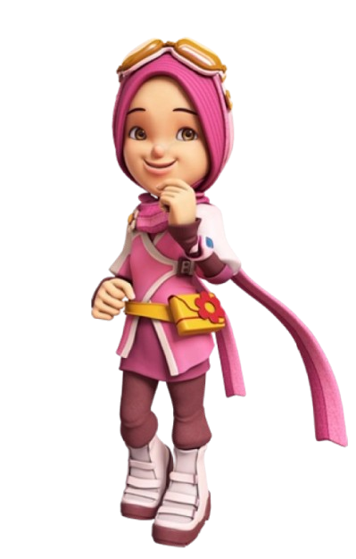
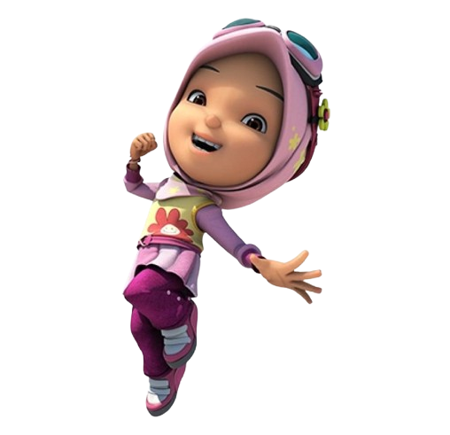
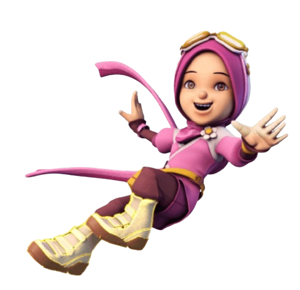
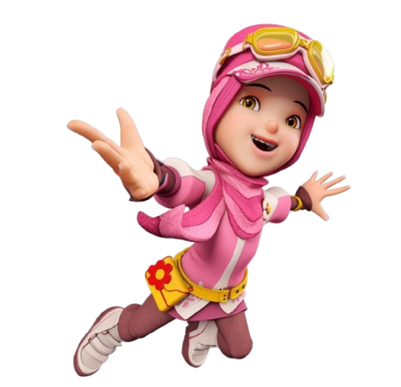

SIGNATURE MOVES


Yaya is one of the most prominent and beloved characters in the BoBoiBoy series, serving as a dedicated member of BoBoiBoy's superhero team. Known for her kind-hearted nature, discipline, and unwavering sense of justice, she acts as the group's moral compass, constantly encouraging her friends to do the right thing.
Beyond her role as a student, Yaya possesses remarkable superpowers, including the ability to fly and immense super-strength. These formidable skills make her an essential defender of Earth, allowing her to take on powerful alien threats that would otherwise be insurmountable. Despite her strength, she retains a gentle demeanor and a nurturing personality, deeply valuing her friendships and always putting the needs of others before her own.
A recurring, humorous aspect of her character is her passion for baking. She is famous for her "special" cookies; while she takes great pride in them, they are notoriously difficult to eat due to their rock-hard texture, becoming a long-running gag within the series. This contrast between her gentle, domestic interests and her fierce combat capabilities that defines Yaya as a multifaceted hero who perfectly balances the pressures of her dual life as a school student and an intergalactic defender.


This is the 2D Galaxy Comic style. It features an "anime-inspired" look with sharp lines, dynamic shading, and more mature facial features, highlighting BoBoiBoy as a seasoned galactic hero.

This represents the BoBoiBoy Galaxy Card artwork. It uses a high-detail digital painting style that blends 2D and 3D elements, often seen on official collectibles and promotional merchandise.

This represents the BoBoiBoy Galaxy Card artwork. It uses a high-detail digital painting style that blends 2D and 3D elements, often seen on official collectibles and promotional merchandise.
Nur Sarah Alisya Zainal Rashid is a notable Malaysian voice actress, best recognized by fans of Southeast Asian animation for her foundational role in the BoBoiBoy franchise. She served as the original Malay voice actress for the character Yaya, providing the voice that helped define the character's personality, warmth, and strength for audiences.
Her contribution to the series spanned from its inception through the highly successful BoBoiBoy Movie 2, establishing the iconic tone and delivery that made Yaya a fan-favorite character. By anchoring the character's voice for such an extended period, she played a vital role in the initial growth and cultural impact of the franchise before eventually retiring from the role. Her performance remains a significant part of the series' history, contributing to the establishment of the BoBoiBoy brand as a benchmark in animation.
Yaya is a core TAPOPS agent and gravity manipulation expert capable of flying, enhancing her physical strength, and altering the weight of objects and opponents to control the battlefield.